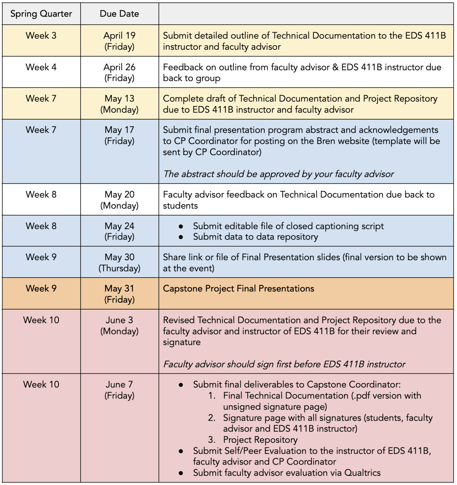

411B Resources
Spring Quarter Deadlines

TA Office Hours
üóìÔ∏è Schedule time during Allie‚Äôs office hours.
ü§î Fill out this form with information about your questions
üìö Allie won‚Äôt be staying regularly during class. If you want to meet with her during class, you need to email her beforehand, at the latest on Tuesday, by 5 pm.
Capstone Process Documents
üìë Capstone Project Guidelines MEDS 2024. Available for download at Bren‚Äôs Academic Resources website.
üõü Capstone help ‚Äúorder of operations‚Äù (only available to EDS 411 students).
UCSB Library Research Data Services
üÜó Good enough practices to manage your project.
üì® Contact RDS at: rds@library.ucsb.edu
Public Speaking Resources
Technical Documentation Resources
üóÉ The Technical Documentations for all MEDS Capstone projects are publicly accessible through the capstone projects index at Bren‚Äôs website.
üìì Selected sample TDs (only available to EDS 411 students).